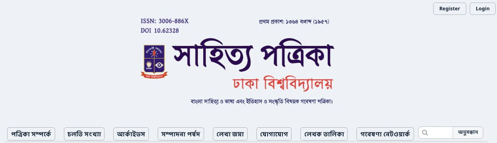
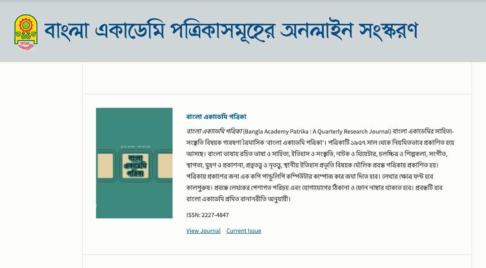

Ongoing and completed research initiatives.
Building a comprehensive digital archive and analysis platform for classical and modern Bangla texts.

Successfully completed the digital archiving of "Shahitto Potrika" (journal.bangla.du.ac.bd), the oldest Academic Bangla journal established in 1957.

Developed the official Journal platform (journal.banglaacademy.gov.bd) and Publication website (publication.banglaacademy.gov.bd) for Bangla Academy.
A Socio-Legal Study on the Career-Marriage Trade-off Facing Women in Bangladesh.Role: Co-Principal Investigator [2024-2025]
Additional research grants and project details are being updated.